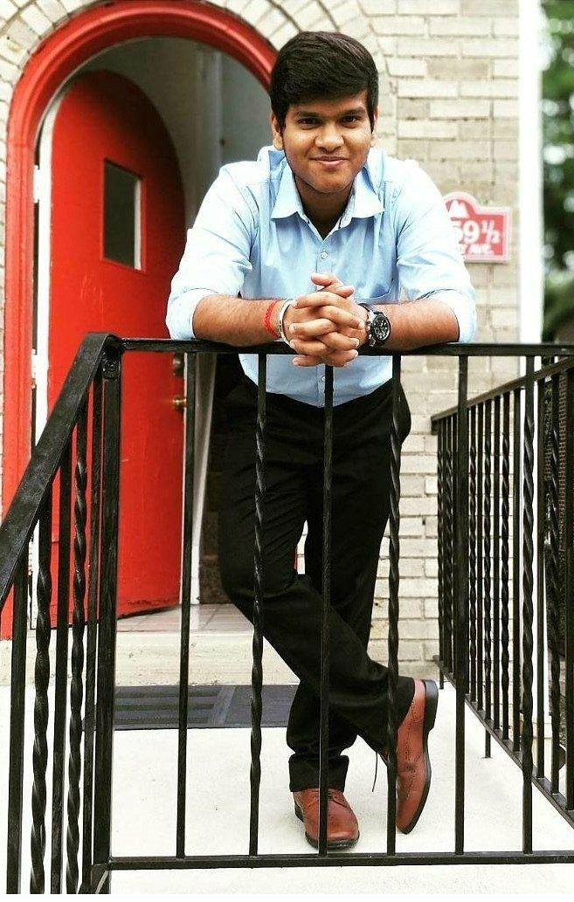

Vijayaram Balasubramanian holds a master’s degree in mechanical engineering from Carnegie Mellon University (CMU). He has one year of professional engineering experience, having improved many products in terms of efficiency and manufacturing cost. A natural problem-solver, he meticulously designs, builds, and tests products to ensure optimal performance while implementing cost-effective techniques that save companies thousands of dollars a year. He aspires to hold a full-time job in mechanical engineering, where he can channel his knowledge and experience toward solving complex engineering problems and driving innovative results.

In a CMU course titled Advanced Mechanical Design, Vijay worked with peers on a sponsored project called Portable Stretch Ladder. The sponsor’s seven-year-old daughter uses a stretch ladder, but the products on the market are heavy and tough to transport. To improve portability, Vijay and his team first researched the specifications of a stretch ladder, which contains two vertical bars with three to five horizontal bars between them. For their ladder, they designed the vertical bars as a three-part system that folds into itself and made the horizontal bars push-fit so that they can be easily detached.
Using Ansys software, he and his team analyzed the design for stresses, deformations, and safety. During the material selection process, they chose ABS plastic, which was then fabricated using CNC Lathe and milling. With a 25% reduction in weight and parts that fold or detach, their stretch ladder can be carried in a gym bag. Vijay and his team presented their finished product at CMU’s design exposition, where it received many positive reviews.
Vijay also participated in Formula SAE, a national-level design competition in which participants devise and construct Formula-style racecars. Within a team of twenty-five students, Vijay acted as the lead for a five-member fabrication division. During the final phase of fabrication, the deadline was imminent. Rushing to complete the job, one team member fabricated the brake disc with wrong dimensions, which ultimately resulted in a minor accident.
As leader, Vijay took ownership and spoke privately with the member responsible for the faulty disc, explaining the consequences and asking him to test parts before having them assembled. Moreover, Vijay made sure to do quality control for every part. With his supervision, no other parts failed, and he passed on his techniques to future teams. From this experience, Vijay learned vital leadership and communication skills.
While working for Atlanta Trading Company (ATC), Vijay led discussions with Tennibot, which resulted in securing a partnership between the two companies and expanding ATC’s robotic division. He also increased Tennibot’s manufacturing ability by sourcing parts from Asia. Moreover, his work contributed to a 10% rise in revenue for ATC, thereby ensuring that the partnership was mutually beneficial.
At Ryobi Die Casting, Vijay tested and designed products to increase their efficacy. He conducted a time study to find the optimum heat treatment and hardness parameters for a Ford Maverick I4 Bearing Beam. Through data analysis, he improved the product’s efficiency by 18%. For another assignment, he enhanced the cooling effect of Honda Civic’s Distributor Conformal Cooling Line by modifying the design in SolidWorks and analyzing it in Ansys Fluent. Because of his work, the cooling line became twice as productive.
He also implemented cost-saving techniques. Collaborating with Process Engineering, Melting, and R&D departments, he tested three fluxes and discovered the best flux in terms of cost and properties. This testing resulted in a yearly savings of $33,000.
Passionate about inclusion, Vijay has particular respect for his elders. Near the end of an internship, he had to collaborate with two engineering departments. Unfortunately, both departments had their own schedules, causing Vijay to worry that the project would not be finished in time. One day he noticed that a man could not start his car. Always one to tackle challenges and assist others, Vijay jumpstarted the vehicle. Fortuitously, the man turned out to be a department head and helped Vijay schedule his project before his internship ended.
Even in his free time, Vijay values activities that foster innovation. He enjoys drumming, which research has shown employs both brain hemispheres, thereby strengthening creativity and analytical thinking. Moreover, he regularly plays tennis, a sport that requires tactical thinking, concentration, and creativity.
Possessing a pay-it-forward mentality, Vijay is active in community service. He recently prepared resume and cover letter templates for GradOrbit, an initiative that provides mentorship to recent college graduates. Furthermore, he will become a mentor at the initiative, coaching grads on job-searching and career-related skills.
To contact Vijay about a job opportunity, email him at vijayarb@alumni.cmu.edu or connect with him on LinkedIn
Email us to enroll in our program as a GOgrad or to express interest in becoming
a GOmentor.
Follow us on LinkedIn and Twitter to stay updated.
Email: go@gradorbit.com